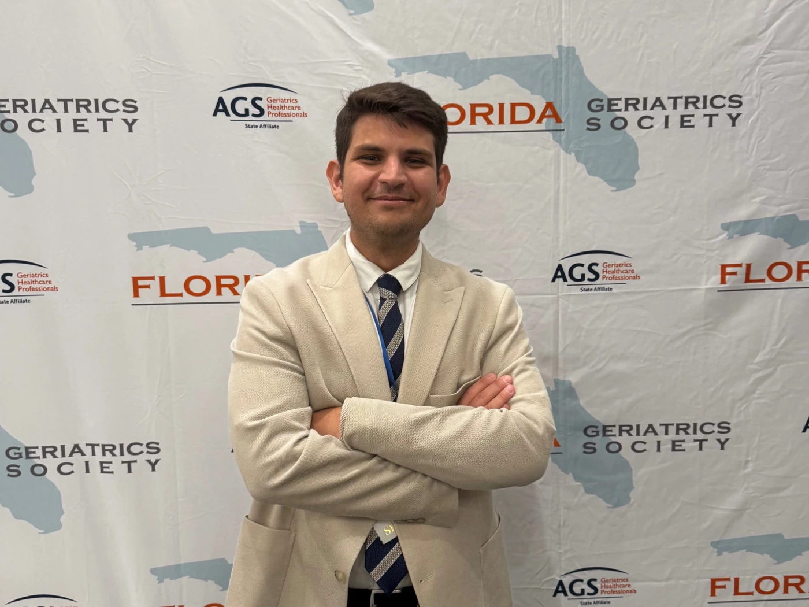
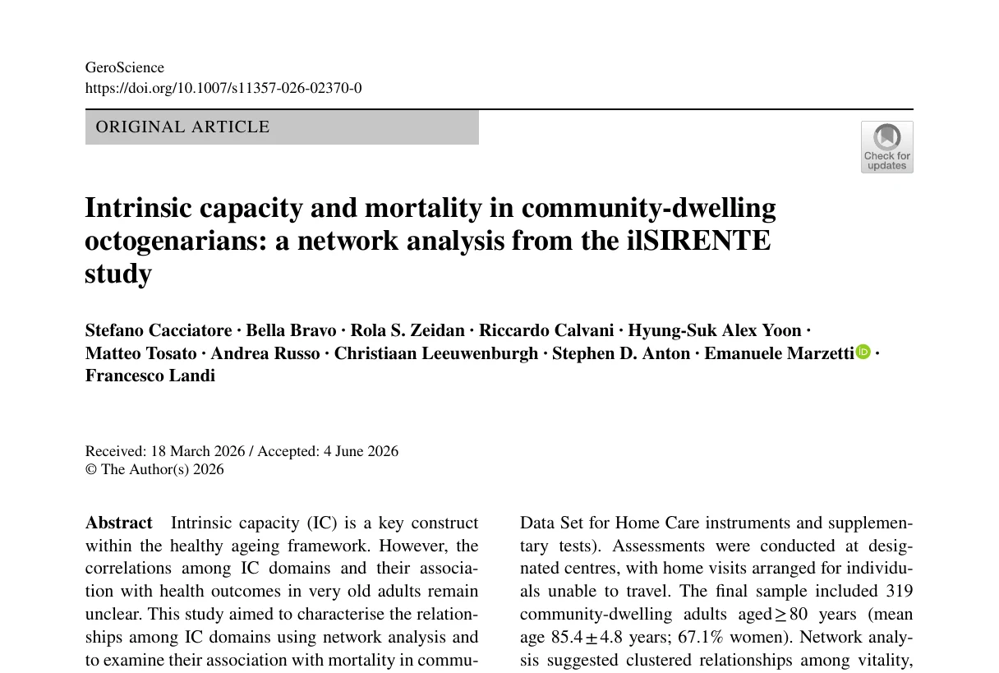
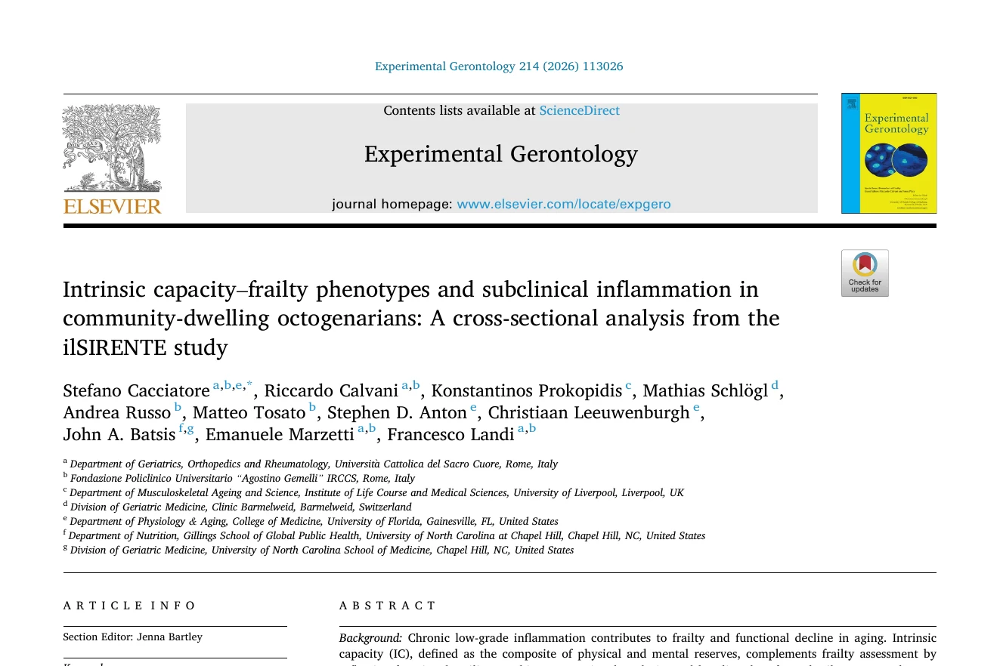
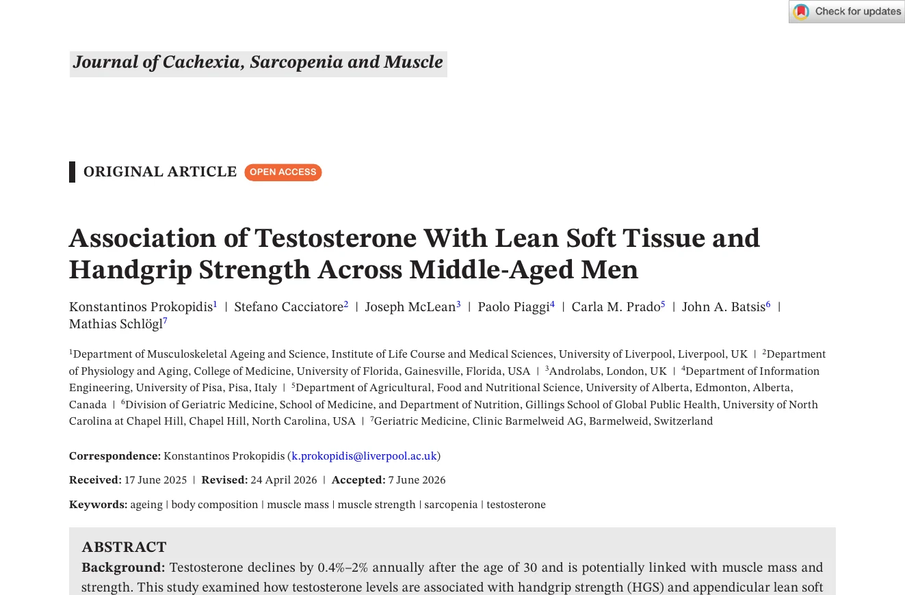
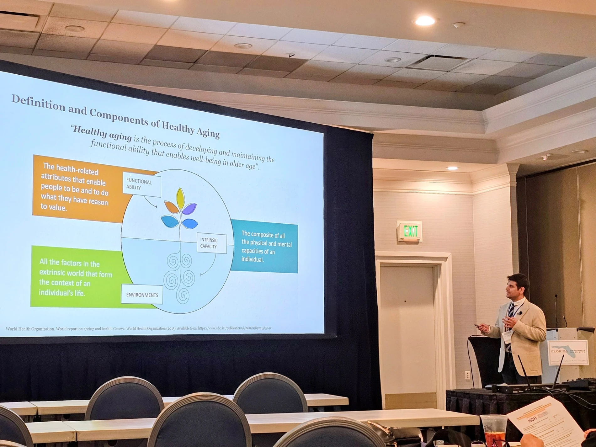

Ermenegildo Zegna Founder’s Scholarship
Ermenegildo Zegna Foundation
I study intrinsic capacity and how physical and mental abilities change over time to shape healthy aging and independence.

Bio
I am a geriatrician and epidemiologist studying intrinsic capacity within the World Health Organization healthy aging framework.
I trained at Università Cattolica del Sacro Cuore in Rome, where I earned my medical degree in 2021 and completed my residency in Geriatric Medicine in 2025, both with honors, and obtained a Master’s degree in Epidemiology and Biostatistics in the same year.
From August 2024 to December 2025, I worked as an attending physician at Fondazione Policlinico Universitario Agostino Gemelli IRCCS, combining inpatient care in an acute geriatric medicine ward with outpatient activities focused on chronic disease prevention and the promotion of healthy longevity.
My clinical and research experience increasingly drew my attention to the World Health Organization concept of intrinsic capacity, which provides a framework for understanding the physical and mental capacities people can draw on as they age. This perspective gradually became the central focus of my research.
In January 2026, I joined the Institute on Aging at the University of Florida as a Visiting Research Fellow, supported by the Ermenegildo Zegna Founder’s Scholarship. Since July 2026, I have also been undertaking a PhD by Prior Publication in Medicine at University College Cork.
My work examines how intrinsic capacity can be measured across different populations, how it changes over time, and how these trajectories relate to mobility, disability, resilience, and other functional outcomes. I am particularly interested in developing measures that are scientifically robust, clinically interpretable, and ultimately connected to the biological processes underlying healthy aging.
My experience in community-based prevention has also led to a broader interest in population health and in the biological, behavioral, social, environmental, and policy factors that influence healthy aging and longevity.
I also serve as an Editor for BMC Geriatrics.
Selected recognition
Ermenegildo Zegna Foundation
Università Cattolica del Sacro Cuore
BMC Geriatrics, Springer Nature
Research
My work is centered on intrinsic capacity and the WHO healthy aging framework, with a focus on how capacity can be measured, how it changes over time, and what those changes mean for healthy aging and independence.
I study how intrinsic capacity and its domains can be measured across different populations and datasets. My work includes harmonizing multidimensional measures, evaluating their structure, and developing clinically interpretable approaches to assessing capacity and change over time.
I examine how intrinsic capacity evolves across later life and how changes in physical and mental capacities relate to mobility, disability, resilience, and other functional outcomes.
More broadly, I am interested in how chronic disease, health behaviors, and social and environmental conditions shape healthy aging at the population level. This perspective connects my work on individual capacity with prevention, epidemiology, and the broader determinants of health and longevity.
Selected publications


Experimental Gerontology · 2026

Journal of Cachexia, Sarcopenia and Muscle · 2026
Speaking and scientific communication
I contribute to scientific meetings, educational programs, and discussions on healthy aging, intrinsic capacity, muscle health, and prevention.
Invited talks and enquiries

Longevity Brief
A curated selection of recent research on healthy aging and longevity.
Latest issue
Issue 01 · August 2026
From molecular aging to mobility, disability, and independence, the first issue explores how emerging science can help us understand the capacities that matter as people age.
Contact
For research collaborations, invited talks, and academic enquiries.